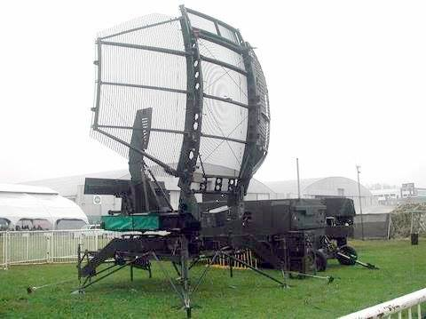
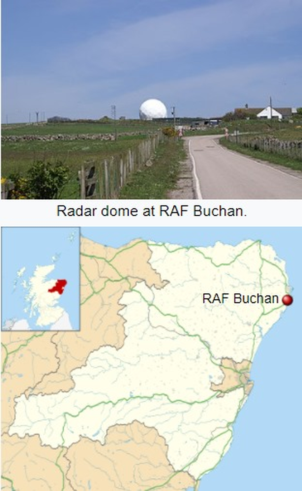
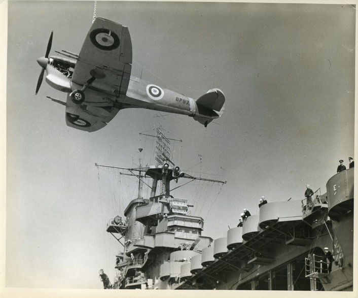
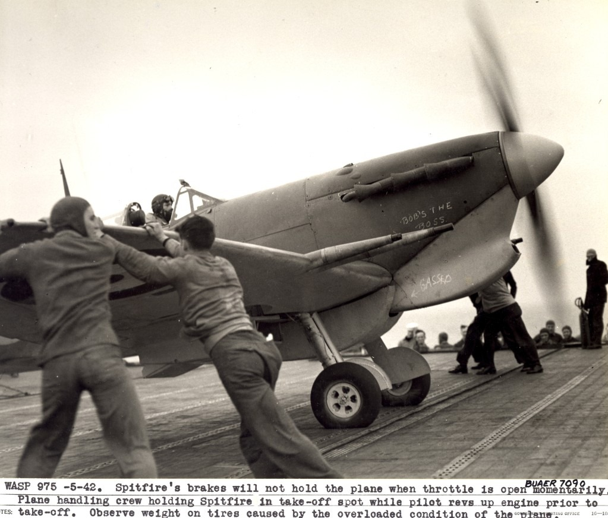
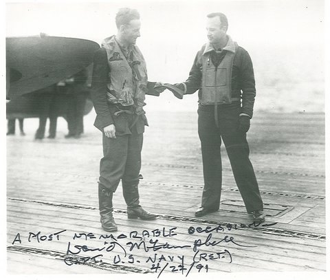
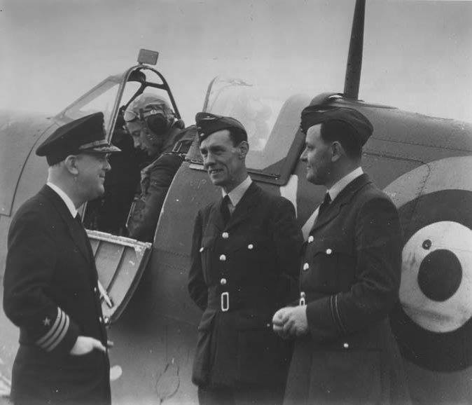
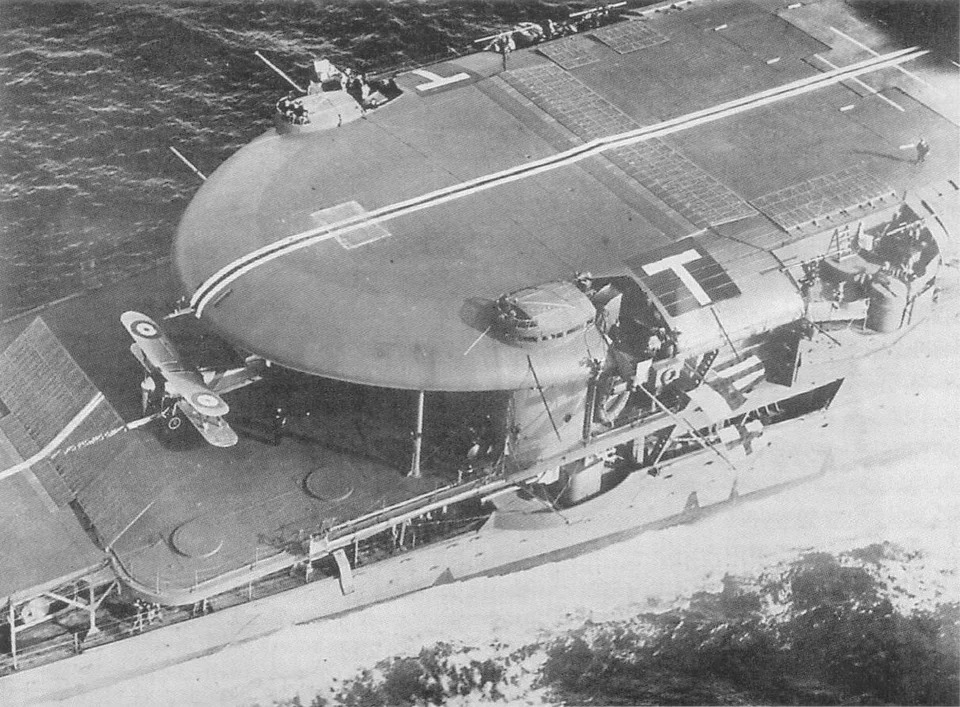
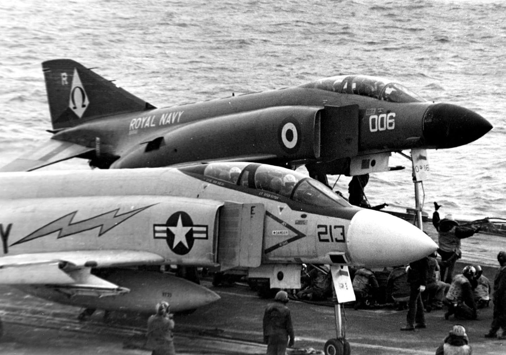

항공모함 관련 이모저모 (1)
게시: 2021-06-03T06:30:57+09:00
<영국 항모를 찾아라> 1982년 포클랜드 전쟁때 아르헨티나 공군의 주목표는 물론 영국 항모 Hermes와 Invincible. 그러나 격침시키려면 먼저 어디 있는지를 찾아야 하는데 조기 경보기가 없는 상황에서는 그게 불가능. 아르헨 공군이 쓴 방식은 포트 스탠리에 TPS-43 레이더를 갖다놓고 이걸로 영국 해리어기들의 비행을 탐지한 뒤 대충 그쪽 방향으로 비행기를 날려보내는 것. 영국 항모들도 부지런히 움직였으므로 그런 방식으로는 포착이 쉽지 않았고 결국 아르헨 공군은 한번도 두 항모의 위치를 제대로 포착한 적 없었음. 영국 해군도 아르헨 공군이 항모를 찾지 못하게 하려고 항모 앞에 구축함들을 깔아놓음. 아르헨 공군기들은 보이지 않는 항모를 찾기보다는 당장 눈 앞의 구축함을 공격하는 것을 선택. 그 때문에 항모들은 안전했으나 구축함들의 피해가 컸음. 그런 상황에서 포트 스탠리의 TPS-43 레이더는 영국 항모에게 큰 위협이었으므로 그걸 잡으려 해리어들이 Shrike 대레이더 미쓸을 두 차례 발사했으나 영국군도 허당인 건 마찬가지라 다 안 맞음. 결국 영국군이 포트 스탠리 점령할 때 TPS-43 레이더도 노획. 근데 이걸 또 뜯어가서 스코틀랜드 동해안의 공군기지 부컨(Buchan)에 설치해서 1994년까지 운용. 알고보면 가난한 나라 영국.
 
<엄근진 모드 한국 해군 경항모론> 경항모가 정말 쓸모가 있는 듯. 특히 대부칸용으로. 경항모 반대론자들이 지적하는 경항모 무쓸모론은 크게 아래와 같은데 1) 좁은 황해/동해에서 손쉬운 타겟함일 뿐 2) 좁은 한반도에서 뭔 항모? 차라리 그 돈으로 공군기를 더 도입해라 제대로 된 밀덕은 아니지만 좁은 견해로 반박을 해보면 1) 타겟함? 포클랜드 전쟁에서 아르헨 공군이 영국 항모를 못 잡은 이유는 딱 하나. AEW(Airbourne Early Warning, 조기경보기)이 없는 아르헨 공군이 항모를 찾을 능력이 없어서. 일본이나 중국을 상대로 한국 경항모가 황해나 동해에서 작전을 하면 자살행위겠지만, 탐지 능력 떨어지는 부칸 상대로는 경항모는 상대적으로 꽤 안전. 항모의 천적은 잠수함인데, 느리고 시끄러운 부칸 디젤 잠수함 상대로는 30노트 이상의 속도를 내는 경항모는 상대적으로 정말 안전. 특히 지상 발진 대잠초계기의 지원을 지원을 받으면 매우 안전. 2) 좁은 한반도에서 무슨 항모? 아무리 탐지능력 떨어지는 부칸도 구글 맵 이용하면 한국 공군기지 상대로는 탄도탄 마음껏 퍼부을 수 있음. 경항모는 부칸이 공격할 수 없는 항공기지로서, 상대적으로 취약한 후방 방공망을 헤집고 종심 타격이 가능. 특히 경항모는 그 존재만으로도 부칸에게 큰 부담이 됨. 동해안과 서해안 후방에도 강력한 방공망을 구축해놓아야 함. 경항모를 쓰느니 공군기를 더 산다? 그것도 괜찮지만 F-16은 2천 파운드 폭탄 4방 달면 전투 반경이 대략 630km. 사실상 500km 안쪽. 한반도가 좁다지만 오산 공군기지에서 함흥까지 직선거리가 320km. 부칸 후방을 타격하려면 경항모에서 발진하는 것이 확실히 더 유리. 게다가 중국, 일본 상대로도 꽤 쓸모가 있다. 좁은 황해, 동해가 아니라 중국과 일본의 목줄인 말래카 해협 근처나 일본의 태평양 방면 쪽에서 어슬렁거리면 (워낙 바다가 넓으니) 찾기도 어렵고 그 존재 자체로 중국과 일본 해공군력을 붙잡아 두는 효과가 있다.
<캐터펄트도 테일후크도 필요없다> 1942년 4월, 이탈리아 해공군 및 독일 공군의 공격으로 위기에 빠진 지중해 유일한 영국군 기지 말타 섬을 지키기 위한 Spitfire 공군 전투기를 수송하기 위해 HMS Eagle과 함께 미해군 USS Wasp가 동원됨. 소위 Operation Bowery. 당시 영국군은 쓸만한 함재 전투기가 없어서 날개도 안 접히고 테일후크도 없는 공군용 Spitfire를 그대로 싣고감. 사진 속 크레인으로 싣고 있는 Spitfire의 날개끝을 잘라낸 것이 보임. 이는 물론 격납고에 집어넣기 위해서는 날개폭을 약간 줄여야 했기 때문. 나중에 이륙하기 전에 갑판에서 다시 붙임. 말타섬에 너무 가까이 가면 적의 공습을 받을 것이 뻔하니까 아주 멀리서 스핏파이어들을 날려보냄. 이때 연료를 꽉꽉 눌러담느라 정상치보다 매우 무거웠는데도 캐터펄트 없이 그대로 날려보냄. 그런데도 대부분 무사히 이륙. 다만 그 중 1대는 이륙에 실패하여 추락, Wasp의 이물에 걸려 비행기 두동강 나고 조종사 사망. 두번째 사진은 이륙할 때 함재기처럼 고정장치가 없으니 엔진 레브업 하는 동안 비행갑판원들이 몸무게로 Spitfire를 찍어누르고 있는 모습. 스핏파이어의 타이어가 무게로 짓눌린 것이 보임.
 
<A brave old pilot... isn't> 아까 말한 Operation Bowery에서 말타섬을 향해 발진한 공군용 Spitfire 중 1대의 연료 탱크에 이함 직후 문제 발생. 이때 조종사인 캐나다 공군소속 Jerry Smith 중위에게 주어진 옵션은 (1) 근처 바다에 불시착한 뒤 구축함에 구조되는 것 (2) 테일후크도 없이 USS Wasp에 착함하는 것. 1대의 전투기가 아쉽다고 생각한 Smith 중위는 목숨을 걸고 착함 시도. 이물 끄트머리 3m 남겨둔 위치에 결국 무사 착함. 이 용감한 조종사에게 경의를 표하는 미해군 파일럿이자 신호장교인 David McCampbell 대위 (1번째 사진 오른쪽. WW2 때 미해군 최고의 에이스). Smith 중위는 수리를 마친 다음날 다시 말타로 이륙 (2번째 사진). 그러나 몇달 뒤 이 젊고 용감한 조종사는 말타섬 작전 중 전사. 그래서 용감한 조종사도 있고 늙은 조종사도 있지만 용감한 늙은 조종사는 없다는 말이 여기서도...
 
<영국 함재기가 그렇게 빠른가요?> 항공모함의 선구자는 누가 뭐라고 해도 영국 해군이긴 한데, 영국 해군도 경험이 없는 초창기엔 항공모함과 그 함재기를 어떻게 써먹어야 하는지 어리버리하긴 마찬가지. WW2를 다 겪어본(?) 여러분들에게야 항모 위에 전투기들이 CAP(Combat Air Patrol)을 치고 있어야 한다는 것이 상식이겠으나, 레이더가 없던 1930년대 중반까지만 해도 적기 내습시 항모의 함재전투기들은 갑판 위에서 대기하고 있는 것이 상식. 로열 네이비 제독님들이 그렇게 생각하신 이유는 1) 미리 전투기를 띄워 어디에서 적기가 오는지 찾아나섰다가 엉뚱한 방향에서 적기가 날아오면 어쩌려고? 2) 그렇다고 전투기를 항모 바로 상공 위에서 빙빙 돌렸다가, 적기 내습시에 강려크한 아군 대공포에 아군기가 얻어맞으면 어쩌려고? 그래서 로열 네이비의 지침은 "대공포로 적기를 막아낸 뒤, 아군기를 발진시켜 돌아가는 적기들을 따라가 두들겨 팬다"는 것. 다만 "영국 함재기 속도가 폭탄도 비운 적기를 따라잡을 정도로 그렇게 빠른가요?" 라는 질문에 대해서는 아무도 대답을 못했다고.

<팬텀까지 콧대 높은 로열 네이비> 쥐뿔도 없는 영길리놈들 콧대 높은 거야 유명하지만 똑같은 F-4 팬텀조차, 아래처럼 미해군 것보다 로열 네이비 것이 콧대가 더 높다! 저렇게 된 이유는 사실 영국 항모가 좀더 작기 때문. 캐터펄트 구간이 짧다보니 그 짧음을 nose landing gear의 길이를 늘려 이륙시의 받음각(angle of attack)을 높이는 방식으로 보완하려한 것.

** 조금 바빠서 새 글은 못 쓰고 그동안 페북에 재미로 끄적거렸던 내용을 오려 붙였습니다.